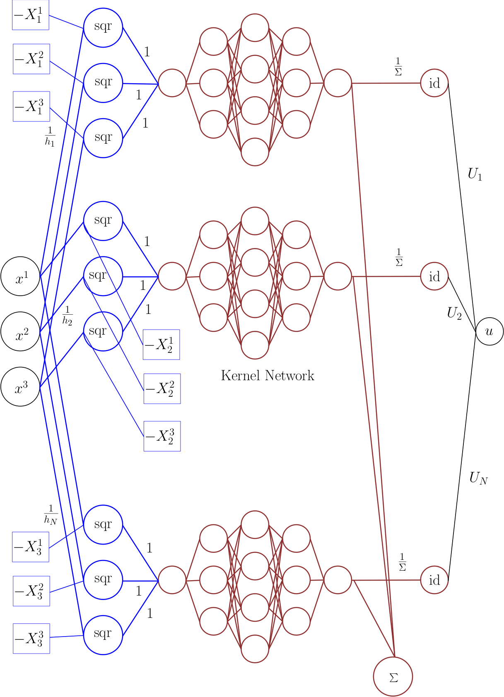
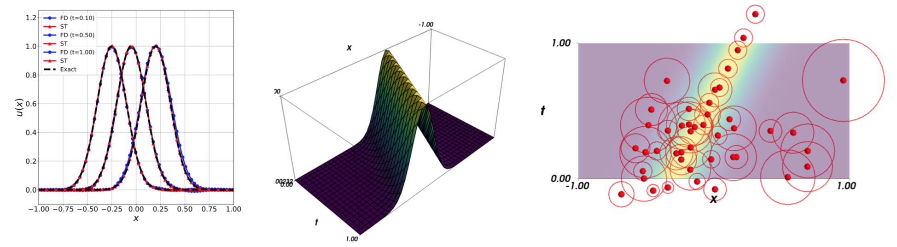
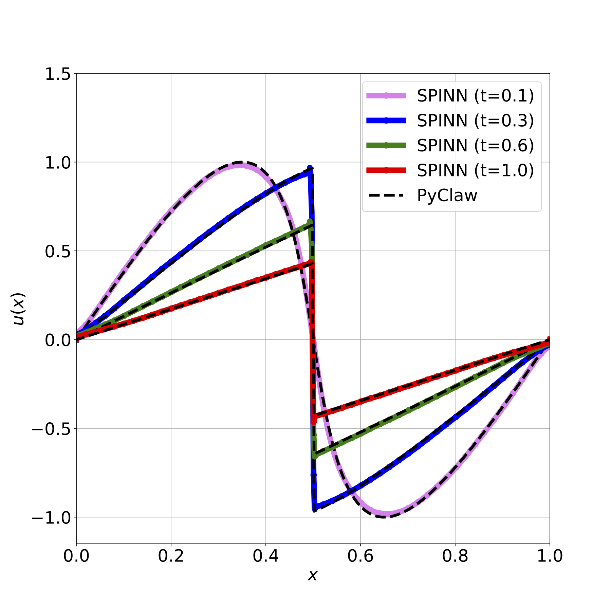
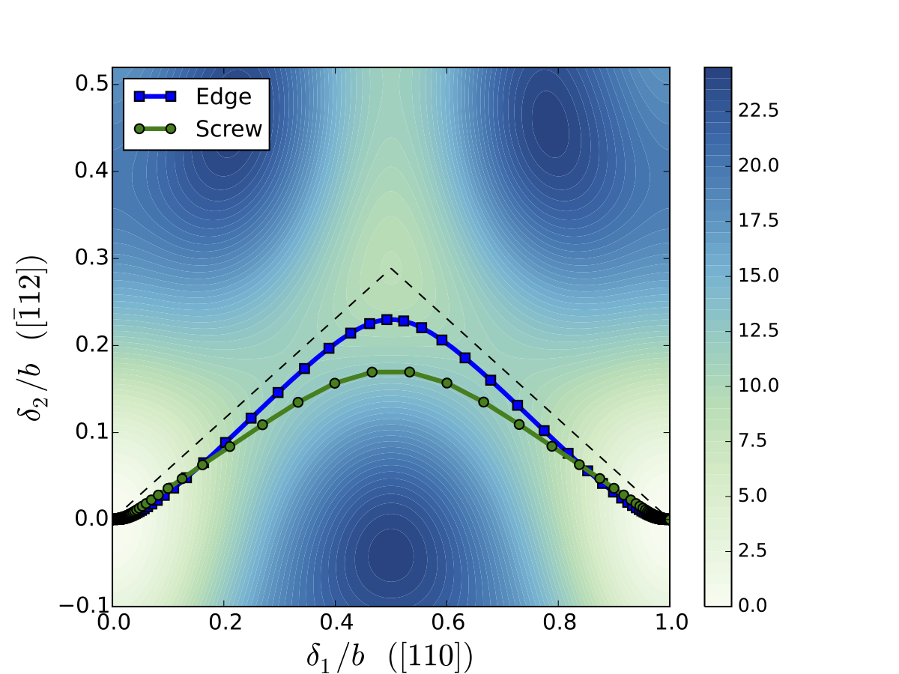
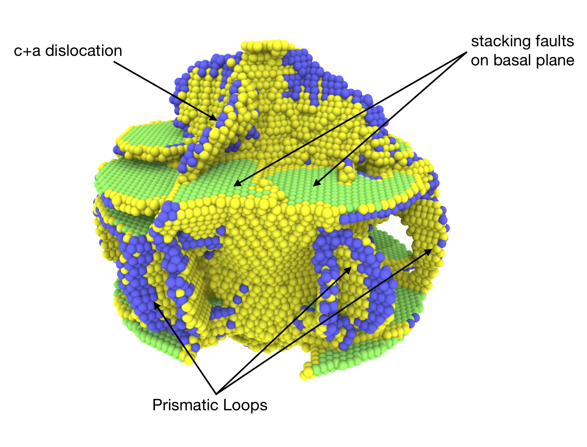

Blog
Here are additional details of my current and past research activities.
SPINN: an interpretable machine learning framework for Partial Differential Equations (PDEs)
Machine Learning (ML) is all the rage these days, and yet one of the most notable drawbacks at the heart of most ML algorithms is their non-interpretability. ML algorithms are largely used as a black box, especially in the context of neural networks. It is a truism that the deeper the neural network, the shallower our understanding of what it actually does! While the use of a black box algorithm that is purely predictive may not be a problem for many engineering applications, it is a serious problem in science, where understanding what happens is something that many scientists would not want to compromise on. Given the proliferation of research on the use of deep neural networks for solving PDEs in recent years, it seems worthwhile to pause and figure out how to endow ML algorithms with some sense of interpretability. In this context, here is my recent work - SPINN: Sparse, Physics-based, and partially Interpretable Neural Networks for PDEs - published in the Journal of Computational Physics (JCP share link). This is a joint work with my (outstanding!) colleague Prabhu Ramachandran.

SPINN is essentially a (very specific!) sparse neural network architecture, as shown schematically above, that naturally generalizes traditional meshless methods and, crucially, is interpretable. It is a new class of neural network architectures that serves as a bridge between conventional meshless methods and deep neural networks. The sense in which SPINN is interpretable is that once the network is trained, we can extract very specific local information about the solution of the PDE that is directly based on the nodes and weights of the network. This correspondence with meshless methods is used to sparsify the network architecture - indeed SPINN is significantly sparser than typical deep neural networks used for solving PDEs.
Here is a look at the solution of the linear advection equation computed using SPINN:

Focusing on the rightmost figure, the position of the particles highlighed in red corresponds to the bias of each neuron in SPINN, while the radius of the circle around each point corresponds to the weight of a particular connection. We can thus literally see the biases and weights of the network in exactly the same way as particles in meshless methods. Notice also how the the nodes align themselves along the peak of the wave, thereby illustrating the implicit adaptivity of SPINN.
As another illustration of the capability of SPINN to solve PDEs, the SPINN solution of the (inviscid) Burgers equation is shown below:

Despite the use of smooth activation functions, SPINN is able to capture very sharp discontinuities like shocks. A lot more examples involving differential equations with highly oscillatory solutions, elliptic, parabolic and hyperbolic PDEs, and examples drawn from fluid dynamics can be found in the paper. A free version of the article can be downloaded from arxiv in case you don't have access to the Journal of Computational Physics.
Prabhu and I are quite excited about this new interpretable ML framework for scientific computing. Look out for more work along these lines from us!
PS: I wrote a Medium article (non-technical) on the broader question of the compatbility of ML with Science. Check it out here: https://medium.com/@amuthanar/is-machine-learning-compatible-with-the-scientific-method-c416e3dfa7b0
A new iterative scheme to solve the Peierls-Nabarro model
The Peierls-Nabarro model is one of the earliest, and still widely used, examples of a multiscale model that aims at predicting the core structure of dislocations in crystalline materials. The key idea behind the Peierls-Nabarro model is that the energy of a dislocated crystal can be thought of as the sum of the bulk elastic energy and the surface energy associated with the slip plane bounded by the dislocation. Despite its simplicity and shortcomings, the Peierls-Nabarro model is one of the most successful continuum model of dislocation cores.

Dissociation of edge and screw dislocations on {111} planes in Aluminium.In a recent work, I proposed a new iterative scheme to solve a generalized version, due to Schoeck, of the Peierls-Nabarro model. Unlike existing techniques, the proposed method exploits certain properties of the Hilbert transform to reduces the solution of the Peierls-Nabarro model to a simple fixed point iteration scheme. An application of the new iterative scheme to study the dissociated core structure of both edge and screw dislocations on {111} planes in Aluminium is illustrated above. Check out the preprint for more details.
Nano-void growth mechanism in Magnesium
As part of my post-doctoral research at Caltech, funded by the MEDE program, I studied spallation in Magnesium (Mg) using the quasicontinuum method. The interest in Mg is primarily due to its promise as a lightweight alternative to conventional metals for various engineering applications. Mg naturally occurs in the hexagonal close packed (HCP) crystal structure. The HCP structure has low symmetry in comparison to other crystal structures like the face centered cubic (FCC) structure, and this has specific implications on how plastic deformation is accommodated at the atomic scale. Unlike FCC materials where slip systems dominate, the role of twinning is crucial for understanding the plastic response of HCP materials.

Plasticity around nano-voids in MagnesiumTo understand the atomistic basis of spall, we (I, along with Mauricio Ponga, Kaushik Bhattacharya and Michael Ortiz) studied the time evolution of nano-voids in single crystal Mg subject to tensile strain loads. This study led to the important conclusion that the absence of any significant interactions between dislocation activity on the basal plane, involving basal slip and prismatic loop formation, and $\langle c+a \rangle$ dislocations that accommodate deformation perpendicular to the basal plane, plays a crucial role in the observed lower spall strength of Mg. Check out our paper for more details